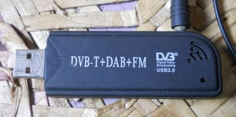

Rtlsdr USB
Rtlsdr USB Plugin
Use a low cost USB DVB-T (Digital TV) receiver for AIS messages from Ships
Various dongles are supported, the r820-t works the best and is also the cheapest (typically $8 US)

Hardware Setup:
You must use a proper vhf antenna, not the one included with the dongle. I cut the antenna coax included with the dongle, and spliced it to the vhf coax. You must solder both inner and outer (shield) connections.
Software Setup:
Linux
You must now compile rtl-sdr from source:
git clone git://git.osmocom.org/rtl-sdr.git
mkdir build
cd build
cmake ..
sudo make install
Next, you must have either aisdecoder or gnuradio (with gr-ais).
For aisdecoder:
wget
http://www.aishub.net/downloads/
aisdecoder
.
tar
.
gz tar zxvf aisdecoder.tar.gz
cd aisdecoder
mkdir build
cd build
cmake ..
sudo make install
For gnuradio with gr-ais:
<not completed>
Windows
You must run the program zadig to install the driver available here http://zadig.akeo.ie/
The default settings should be fine.
The receiver program (rtl_fm) and decoder (aisdecoder) are included as pre-built binaries, so from here, install the plugin setup package. So far I have no pre-built packages for gnuradio on windows, but this would be useful if provided. If there are issues it may be helpful to install the sdrsharp program to determine if the dongle is receiving data at all.
All Platforms
It should be possible (from the preferences dialog) to calibrate the dongle with the Auto Calibrate button:

From what I can tell so far, the error correction range is +- 128 (my two dongles use values of 35 and 50) and must be within 5 for aisdecoder and 15-20 for gnuradio. When the value is more accurate, more ais messages are received as well.
From here, install the plugin package, or build from source and install.
This works best in an area with a lot of ais traffic. Once calibrated, ships should appear on the chart.